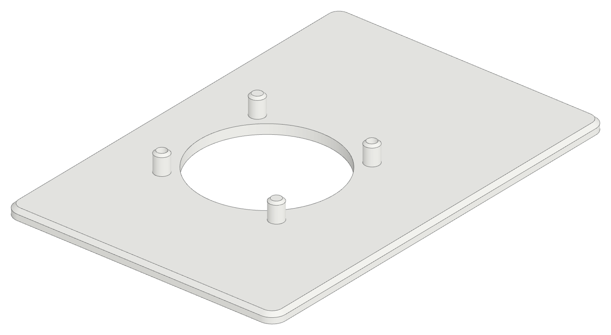
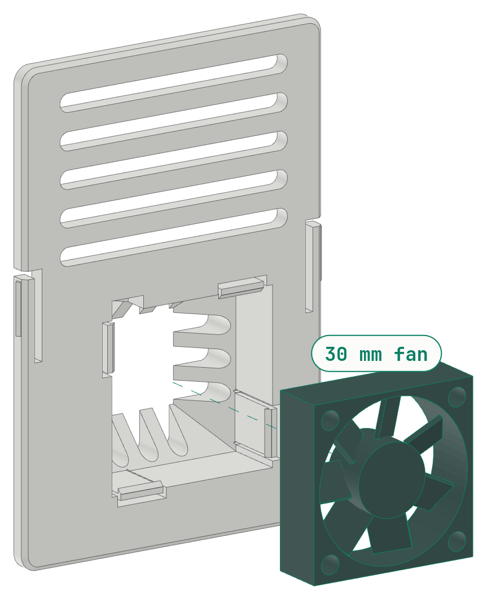
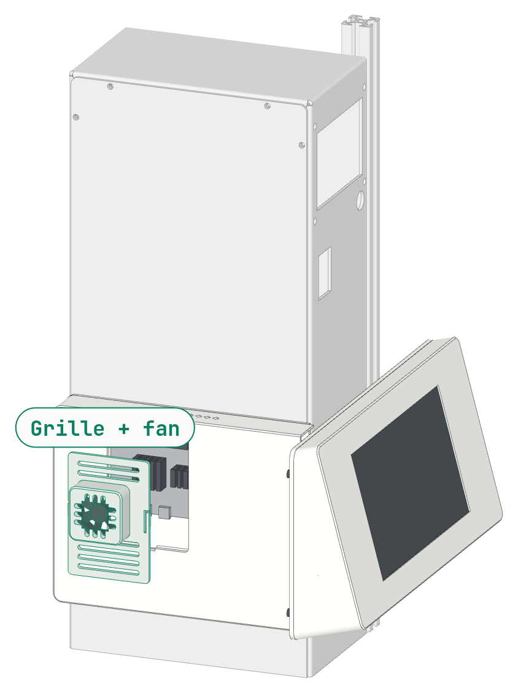

Hardware
The TAZ Workhorse mount
The Printdeck on the front left of a LulzBot TAZ Workhorse, printed on the printer itself.
A mount for the Printdeck hardware on the LulzBot TAZ Workhorse: the Adafruit 7 inch HDMI display with the AR1100 touch controller, a Raspberry Pi 5 with a 30 mm fan and stick-on heatsinks, and the 2.5 inch boot drive. It is at the front left of the printer, below the TAZ Workhorse logo on the electronics chassis, and it wraps around the front left edge of the chassis.
printdeck-lulzbot-build.pdf has the print plan, the hardware list, and the assembly steps.
- The head holds the display in landscape (wide view), turned 180 degrees from its native position: the HDMI and USB sockets are at the left, so normal straight plugs fit. The face leans back 15 degrees, the same as the Slate, and points to the front of the printer. The screen opening is at the centre of the face, so the border is the same at the left and the right.
- The head is 252 mm wide. Its left end is 7 mm past the outer face of the pod (45 mm past the left side of the chassis). Its right end is 207 mm to the right of the left side of the chassis, in front of the front left rail.
- The drive is in the head, flat on the back panel, behind the display.
- The pod is on the left side of the chassis (the aluminium cover), at the same height as the head. It holds the Pi, the fan, and the cables. The white grille snaps into a pocket of the pod, over a fan plate that holds the fan over the SoC of the Pi (see Fan).
- There is no hole to drill. Two printed clips hold the right end of the head on the front slot of the rail. A metal M3 roll-in T-nut for 2020 extrusion rolls into the slot behind the lips, and an M3 x 8 screw from the clip pulls it up. Two screws through a flange of the plate hold up the head. The printer USB cable and the power cable leave at the rear face of the chassis.


Upgrade booklet (PDF)Upgrade booklet on the webBuild instructions (PDF)
head.stlpod.stlback.stlplate.stlclip.stlgrille.stlfan_plate.stlfit_display.stl
The deck screens of the booklet are the wide screens: the display is mounted wide in the head. See the deck UI, wide.
Print the parts
The STL files are in lulzbot/stl/, in their print orientation. Load them as they are. The numbers come from slices with the Cura profiles of the mount: LulzBot TAZ Workhorse, SE tool head, 0.5 mm nozzle, 2.85 mm PLA.
| File | Colour | Filament | Time | Cost | Print orientation | ||
|---|---|---|---|---|---|---|---|
 | stl/head.stl | Navy | 1 | 87 g | 4 h 28 min | $2.00 | Face down. The screen opening is in the first layers: use a smooth sheet for a clean face. |
 | stl/pod.stl | Navy | 1 | 95 g | 4 h 42 min | $2.18 | Outer face down. The grille pocket and the vents are in the first layers. |
 | stl/back.stl | Orange | 1 | 69 g | 3 h 16 min | $1.59 | Rear face down. A flat plate with the clip slots and the windows. |
 | stl/plate.stl | Orange | 1 | 61 g | 2 h 18 min | $1.40 | The face that goes on the cover down. The bosses and the hooks point up. |
 | stl/clip.stl | Orange | 2 | 8 g | 0 h 36 min | $0.18 | On its end, with a brim: the section of the clip is on the bed. Print 2. |
 | stl/grille.stl | White | 1 | 12 g | 0 h 42 min | $0.28 | Back down. The snap tabs bend along the layers. The flat grille of the first pod: if you have it, do not print it again. |
 | stl/fan_plate.stl | White | 1 | 12 g | 0 h 40 min | $0.28 | Grille side down. The four posts for the fan point up. |
| Total | 8 | 344 g | 16 h 42 min | $7.91 |
Total: 344 g of PLA (43 m), 16 h 42 min of printing, $7.91 at $22.99 a kilogram. The fit test of the screen opening (stl/fit_display.stl, 22 g, 1 h 10 min) is optional. Print it first, and check the display in it: the display pocket has 0.3 mm of clearance at each side.
Settings
| Profiles | One Cura profile for each part: run python3 cura/make_profiles.py --install with Cura closed, then pick “Printdeck - LulzBot …”. |
| Printer | LulzBot TAZ Workhorse, SE tool head, 0.5 mm nozzle |
| Material | PLA, 2.85 mm |
| Head, pod, grille, fan plate | 0.3 mm layers, 1.5 mm walls, 1.2 mm top and bottom, 15 % grid infill, skirt |
| Back panel, plate | 0.4 mm layers (a 0.3 mm first layer), 1.5 mm walls, 15 % grid infill, skirt |
| Clip, roll-in nut | 0.3 mm layers, 100 % infill, with a brim. |
| Speeds | Infill 75 mm/s (60 mm/s with 0.4 mm layers), inner walls 60 mm/s, outer walls 35 mm/s (30 mm/s on a face that shows), travel 200 mm/s. The flow stays at 12 mm³/s or less. |
| Supports | Off for all parts. Every hole, pocket, and hook has 45° faces. A slice of each part with supports on (60°, everywhere) adds 0 g of support. |
What you need
Hardware
| Item | Where | |
|---|---|---|
| 6× | M3 × 10 socket cap head | 2 × plate on the cover (upper pair of PP-FP0164); 4 × back panel into the head |
| 2× | M3 × 12 socket cap head | 2 × plate flange into the back panel |
| 12× | M3 × 6 socket cap head | 4 × display board (it cuts its thread); 4 × Pi (it cuts its thread); 4 × drive on the back panel |
| 4× | M3 × 8 socket cap head | 2 × pod onto the plate; 2 × rail clip into its T-nut |
| 2× | M2.5 self-tapping round head Phillips, 8 to 11 mm long | 2 × fan onto the fan plate (it cuts its thread) |
| 2× | M3 hex nut, 5.5 mm across the flats | 2 × printed roll-in nuts, in place of the T-nuts (option) |
| 2× | M3 roll-in T-nut with spring ball, for 2020 extrusion, 6 mm slot | 2 × rail clips |
| 2× | M3 washer | 2 × under the cover screws |
| 2× | M3 × 5 heat-set insert | 2 × plate, pod screw blocks (3 to 5 mm fits) |
| 6× | M3 × 7 heat-set insert | 4 × head, back screws (3 to 7 mm fits); 2 × back panel, flange screws (3 to 7 mm fits) |
All the screws are M3 socket cap screws, for a 2.5 mm hex key. A shorter or a longer heat-set insert fits, up to the length in brackets.
Electronics and cables
| 1× | Raspberry Pi 5 (from the Slate build) |
| 1× | 30 × 30 × 10 mm 5 V fan with the Pi 5 fan plug (4-pin JST-SH), the same as the Slate. From the fan to the fan socket of the Pi, the cable route is 4 cm. The cable must be 8 cm or more, so that the fan plate with the fan comes out of the pod on its cable. |
| 1× | Stick-on heatsinks for the Pi 5 (a set), max. 13 mm high. The heatsink of the SoC can be up to 20 × 20 mm. |
| 1× | Adafruit 7 inch HDMI display with touch, product 2407 (from the Slate build) |
| 1× | 2.5 inch SATA drive with its USB adapter board, the boot drive (from the Slate build) |
| 1× | HDMI cable: micro HDMI to HDMI, straight plugs, a flat ribbon of 30 cm or more (the route is 27 cm). The ribbon kit of the Slate fits. |
| 1× | Micro USB to USB-A cable, straight plugs, max. 3.5 mm thick, 15 cm or more (the route is 13 cm). |
| 1× | USB 3 cable for the drive: micro-B SuperSpeed to USB-A, 15 to 20 cm (the route is 15 cm). |
| 1× | USB-A to USB-B cable for the printer: 31 cm in the pod, plus the run behind the printer to the USB socket of the printer board. |
| 1× | USB-C power cable: 9 cm in the pod, plus the run behind the printer to the Raspberry Pi 27 W USB-C power supply. |
Tools
- Drill with a 3.2 mm bit (for the four holes of the Pi)
- Soldering iron with a heat-set insert tip, at 220 °C
- 2.5 mm hex key (M3 socket cap screws)
Before you start

Check on your printer
- Check the rear screw of the upper pair on the cover: 237.3 mm above the bottom edge of the cover, and about 3.6 mm from the rear edge of the cover. The design uses the value of the LulzBot drawing.
- Measure the TAZ Workhorse logo on the front of the chassis. The top of the head is 260 mm above the bottom of the chassis; the LulzBot drawing gives the logo at 264 mm, and the drawing is not to scale.
- Look at the front slot of the front left rail. The clips need a free slot from 150 to 230 mm above the bottom of the chassis: remove the dust cover there, if the rail has one.
- Move the bed to the front and the X axis to the bottom. Check that the head is clear of the bed, the print, and the tool head: it is 72 to 324 mm to the right of the left face of the chassis, and 125 to 260 mm above the bottom of the chassis.
- Check behind the printer: the printer USB cable and the power cable leave the pod at the rear face of the chassis, 128 to 149 mm above its bottom.
Prepare the drive
The Printdeck starts from the 2.5 inch drive. Write the Printdeck image to it before you build the mount: the drive goes into the head in step 3. See Install on the Printdeck OS page.
The display is turned 180 degrees from its native position. Set display_rotate=180 in printdeck.txt on the PRINTDECK partition of the drive; the deck then uses its wide layout. If the picture is upside down, set display_rotate=0.
Build the mount
Each step names the parts and the hardware that it needs. The parts from an earlier step have the number of that step.

Drill the Pi
- The mounting holes of the Pi 5 are 2.7 mm, for M2.5. Drill the four holes to 3.2 mm for M3.
- Drill slowly, from the top of the board, with the board flat on a piece of wood.
- Keep the drill straight. Stay inside the plated ring of each hole: do not touch the tracks or the parts around it.
- Remove all the dust from the board with a brush or with air before you continue.
Note. Skip this step if your Pi already has 3.2 mm holes.

Display into the head
- Press the four M3 × 7 inserts into the two columns and the two blocks at the back of the head. Use a soldering iron at 220 °C. Stop when the insert is flush.
- Put the head face down on a soft cloth.
- Put the display glass down into the pocket: the sockets of the board at the left (seen from the front), the FPC edge of the panel at the top.
- Put the foam tape on the back of the panel. Put the board on the four bosses, and attach it with four M3 × 6 screws. They cut their own thread in the bosses: turn them until they are snug, and no more.
- Connect the HDMI cable and the micro USB cable to the board. Both plugs point to the left.
Note. The screen opening is at the centre of the face: the border is the same at the left and the right.

Drive on the back panel
- Press the two M3 × 7 inserts into the two bosses on the front face of the back panel, from the rear.
- Put the drive on the four pads on the front face of the back panel: the adapter toward the left (the pod side), the M3 holes on the pads.
- Attach it with four M3 × 6 screws from the rear face of the panel.
- Connect the micro-B plug of the drive cable to the adapter.
Note. Press each insert in until it is flush with the rear face, or a little below it. Cut off any ring of melted plastic around the insert. The plate flange has a relief for a small ring, but a large one holds the flange off the back panel, and the two screws then bend the panel at its corner.

Back panel onto the head
- Put the display cables through the upper window at the left of the back panel, and the drive cable through the lower window.
- Put the back panel on the head. Attach it with four M3 × 10 screws from the rear face, into the inserts.
Note. The heads of the screws stay on the rear face. They are behind the head, and they do not show.

Plate on the cover
- Press the two M3 × 5 inserts into the two blocks at the bottom of the plate (from below).
- The cover is PP-FP0164, with 10 screws. Remove its upper pair of screws from the left side of the chassis: the front one and the rear one, 237.3 mm above the bottom edge of the cover.
- Put the plate on the cover, with the slots of the two pads over the two holes. Attach it with two M3 × 10 screws, each with a washer. Leave them loose: the flange screws pull the plate to the back panel first.
Note. The slots in the pads let the plate fit 5 mm up or down and 1 mm to the front or the rear. The pad is 4 mm thick, so the M3 × 10 goes 3.5 mm into the nut of the chassis (the old screw went 4.0 mm).

Pi on the plate
- Stick the heatsinks on the Pi: on the SoC (the large chip at the middle) and on the RP1 (the chip between the SoC and the USB ports). A heatsink can be up to 13 mm high.
- Put the Pi on the four bosses: the USB ports toward the front of the printer, the USB-C and HDMI ports down.
- Attach it with four M3 × 6 screws. They cut their own thread in the bosses: turn them until they are snug, and no more.

Clips in the rail
- Hold the back panel on the front face of the front left rail, with its bottom edge 125 mm above the bottom of the chassis. Mark the top of the two long slots in the panel on the rail.
- At each mark, put one edge of a T-nut into the front slot of the rail, with the thread toward you. Roll the nut in until it is behind the lips. The spring ball holds it in the slot.
- Put a clip on the rail at a mark, with its key along the rail. Put an M3 × 8 screw through the counterbore in the key, and turn it into the nut.
- Tighten the screw until the clip is tight on the rail. Do the same with the second clip.
Note. You can roll the nut into the slot at any point on the rail. You do not remove the ends of the rail. If the nut moves away from the mark, push it back with a small screwdriver. Until you have the metal T-nuts, you can use the printed roll-in nuts (stl/roll_nut.stl). Press an M3 hex nut into the pocket of each one with pliers. Put one long edge into the slot, with the hex nut away from you, and roll the nut in behind the lips. Tighten the screw gently: the printed nut is not as strong as a metal T-nut.

Hang the head
- Hold the head 30 mm above its place, with the two windows of the back panel over the two clip keys. Push the back panel against the clips.
- Let the head drop 30 mm. The keys go into the dovetail slots.
- Lead the display cables and the drive cable out of the windows into the pod.
- From inside the pod, put the two M3 × 12 screws through the flange of the plate into the back panel. Tighten them, then tighten the two cover screws of the plate.
Note. The two screws through the flange hold up the head. The clips hold its right end against the rail.

Cables
- Connect the HDMI cable to the HDMI 0 port (next to the USB-C port). Push the plug straight in. Let the cable go straight down from the plug, then turn it to the front in a wide curve along the bottom of the pod. Do not bend it at the plug.
- Connect the touch cable to the upper USB 3 port (blue), and the drive cable to the lower USB 3 port.
- Connect the printer cable to the lower USB 2 port. Lead it up the front of the pod, over the Pi, down at the rear end of the Pi, and out of the upper notch in the rear wall.
- Connect the power cable to the USB-C port. Lead it down and to the rear, out of the lower notch.
- Behind the printer, connect the printer cable to the USB socket of the printer board, and the power cable to the power supply.
Note. No cable goes through a hole in the printer, and no cable shows on the front or the side.

Pod
- Connect the fan cable to the fan socket of the Pi: the small 4-pin socket between the end of the GPIO header and the USB ports. Lay the fan on the Pi.
- Hold the pod about 6 mm low and 6 mm out from its place, and 4 mm to the rear. Move it 4 mm to the front, then push it up and in at 45° onto the two hooks of the plate. The rear wall goes over the two cables.
- Put the two M3 × 8 screws up through the bottom of the pod into the plate. They pull the pod up, and the 45° hooks pull it onto the plate.
Note. Two notches in the front edge of the pod are for the heads of the two screws into the left wall of the head.

Fan onto the fan plate
- Take the fan out of the pod through the grille pocket. Its cable stays on the Pi.
- Hold the fan plate with its four posts toward you. Turn the fan so that it blows away from the fan plate, onto the Pi. Most fans show the direction of the air with an arrow on the frame.
- Push the fan onto the four posts, until it is flat on the fan plate. The two solid posts hold it in place.
- Put the two M2.5 screws into the other two holes, from the far face of the fan. Turn them into the hollow posts until they are snug, and no more. They cut their own thread.
Note. A screw of 8 to 11 mm fits: it goes through the fan hole into the post. A 10 mm screw has 4 mm of thread. The fan cable leaves the frame from a side: it does not touch the posts or the screw heads.

Fan plate and grille
- Push the fan plate with the fan into the grille pocket of the pod from the outside, the fan first. The fan plate goes down onto the ledge of the pocket. The cable stays inside the pod.
- Hold the grille at the pocket, with its tabs at the sides. Push it into the pocket over the fan plate. Push both sides until the two tabs click. The grille is flush with the pod.
Note. To get to the fan, put a small screwdriver into a vent slot near a tab, and lift the grille out. Then pull the fan plate out at its air hole. The fan comes out with it, on its cable.
Connect and start

| Cable | Length | Route |
|---|---|---|
| HDMI | 27 cm | HDMI 0 port to the display, plug to plug |
| Touch USB | 13 cm | upper USB 3 port to the display, plug to plug |
| Drive | 15 cm | lower USB 3 port to the drive, plug to plug |
| Printer USB | 31 cm | lower USB 2 port to the rear face of the chassis |
| Power | 9 cm | USB-C port to the rear face of the chassis |
Connect the power cable to the Raspberry Pi 27 W USB-C power supply behind the printer, and the printer cable to the USB socket of the printer board. Turn on the printer and the power supply. The deck starts from the drive and opens the setup.
The design
The mount is a build123d model in lulzbot/, on the CAD of the printer from LulzBot.
Hardware
build/hardware.json and page 4 of the PDF list the hardware. The list comes from the model: each screw, washer, and heat-set insert is in the model at its place, and make_pdf.py stops if the step chips and the list do not agree. All screws are M3 socket cap head screws.
- M3 x 6 socket cap head: 12 (display 4, Pi 4, drive 4). The display and Pi screws cut their own thread in a 2.5 mm hole in the boss: turn them until snug, no more.
- M3 x 8 socket cap head: 4 (pod onto the plate 2, rail clips into the T-nuts 2)
- M3 x 10 socket cap head: 6 (back panel into the head 4; plate on the cover 2, upper pair of PP-FP0164)
- M3 x 12 socket cap head: 2 (plate flange into the back panel)
- M3 washer: 2 (under the cover screws)
- M3 x 7 heat-set insert: 6 (head 4, back panel 2; 3 to 7 mm fits)
- M3 x 5 heat-set insert: 2 (pod blocks; 3 to 5 mm fits)
- M3 roll-in T-nut with spring ball, for 2020 extrusion, 6 mm slot: 2 (rail clips). Buy the uxcell M3 roll-in spring T-nut with ball, 2020 series (Amazon B09MFT1PKF). It rolls into the slot at any point on the rail, and the spring ball holds it in place. The LulzBot BOM uses Misumi HNTAP5-5 drop-in T-nuts (the M5 size) in this frame.
The rail is 2020 extrusion. The model has a typical M3 T-nut: 10 mm across the slot, 6 mm along it, 4 mm thick, with 45 degree sides at the bottom. Its top is 1.8 mm behind the face of the rail, so the M3 x 8 screw goes 3.9 mm into its thread. An M3 x 10 screw goes 7.7 mm behind the face, past the bottom of the slot (about 6.5 mm), so do not use one. A printed twist nut failed: it must be less than 5.1 mm wide to go through the lips, and the plastic around an M3 insert or an M3 thread was too thin to hold.
Printed roll-in nut (option)
Until you have the metal T-nuts, you can print two roll-in nuts (stl/roll_nut.stl, 1 g and 3 min each, orange, on its end with a brim, 100 % infill). Each one holds a standard M3 hex nut (5.5 mm across the flats, 2.4 mm thick): press the hex nut into the pocket from the bottom with pliers. The printed nut rolls into the slot at any point on the rail, the same as the metal T-nut. You do not remove the ends of the rail.
- Its section across the slot is 7.1 mm wide and 3.6 mm thick, with 1.4 mm rounds, and it is 11 mm long. You put one long edge into the slot, with the hex nut away from you, and roll the nut in behind the lips.
roll_nut.pychecks the roll in the section of the rail of the LulzBot model, with 0.25 mm of clearance. A wider section does not roll in, and a narrower one holds less of the lips.- The M3 x 8 screw pulls the nut up until its round shoulders are on the round backs of the lips: its top face is then 1.3 mm behind the face of the rail. The screw goes through the full 2.4 mm thread of the hex nut and 0.8 mm past it. There is 1.2 mm of plastic between the hex nut and the lips, and the bottom of the nut is 1.5 mm above the bottom of the slot.
- The hex nut pocket has a 45 degree point up in the print, so the nut prints with no supports.
- The printed nut is not as strong as a metal T-nut. Tighten the clip screw gently.
The idea comes from the "T-NUT for 2020 profile" by nisi1t (https://www.thingiverse.com/thing:5155562, CC BY): a printed nut with an M3 hex nut in it. That nut slides in from an end of the rail. This one is a new design that rolls in.
The drive sits on four 0.5 mm pads, so its M3 x 6 screws go 2.5 mm into the drive.
Drill the four mounting holes of the Pi 5 from 2.7 mm to 3.2 mm for M3 (step 1 of the PDF).
Cover screws
The printer has cover PP-FP0164 (10 screws). The plate uses its upper pair of screws. shape.py has their positions in one table, COVER_SCREWS_MM: (mm above the bottom of the chassis, mm from the front face of the chassis).
- Front: (239.8, 6.1). Measured on the printer: 237.3 mm from the bottom edge of the cover, and 3.6 mm from the front edge of the cover (about +-0.5 mm). The bottom of the cover is 2.5 mm above the bottom of the chassis, and the cover is 2.5 mm in from the front face (LulzBot model). The drawing gives (240.0, 6.0): the measurement agrees.
- Rear: (239.8, 163.9). From the drawing, at the same height, mirrored to 3.6 mm from the rear edge of the cover. To be confirmed.
The pads have slots 10 mm long (up and down) and 4.4 mm wide (+-0.5 mm front to back). Type new values in the table and run make.sh.
Display dimensions
The display dimensions come from the Adafruit CAD (in ref/adafruit/): the YX700WV03-T panel datasheet, the Eagle board file of the 7 inch backpack, and the STEP model of the panel. The Slate code has values that differ:
| Item | Adafruit CAD | Slate | Difference |
|---|---|---|---|
| Panel outline (LCM), long side | 164.9 (datasheet), 165.0 (STEP) | 166.0 | Slate pocket is 1.7 mm too long |
| LCD active area | 154.08 x 85.92 | 157 x 89 | Slate is 2.9 x 3.1 mm larger |
| Opening (active area + 0.5 each side) | 155.08 x 86.92 | 158 x 90 | Slate shows 1.5 mm of black border per side |
| Active area offset (portrait, a, b) | +2.26, +1.49 | +2.29, +1.10 (measured) | b differs by 0.39 mm |
| Board hole pitch, short side | 108.2 (brd) | 108.1 | 0.1 mm |
| HDMI socket centre | 0.9 mm from the board centre (brd) | 0 | 0.9 mm |
| Panel with touch panel, thickness | 4.9 | 7.35 (glass to board) | 2.45 mm gap |
The STEP model of the panel is an approximation: its active area is 156 x 88.9 with an offset of about 1 mm from the datasheet. This mount uses the datasheet. The 2.45 mm between the panel and the board is the space for the FPC fold; put foam tape there, so the glass stays on the lip.
To check on the printer
- The position of the rear cover screw (see above).
- The height of the logo. The LulzBot drawing gives 264 mm above the bottom of the chassis, and the drawing is not to scale. The top of the head is at 260 mm.
- The front slot of the rail: free from 150 to 230 mm above the bottom of the chassis.
- With the bed at the front and the X axis at the bottom, the head is clear of the bed, the print, and the tool head.
Files
shape.pycontains all dimensions. Change a value here, then runmake.sh.parts.pymakes the printed parts, the hardware, and the cables in build123d.workhorse.pyreads the LulzBot model (ref/lulzbot/final_assembly.fcstd), the chassis and cover positions, and the cover screw holes of both covers.model.pybuilds the parts and checks the fit with a true boolean test of every pair:- no hardware part or cable touches a printed part, and no two printed parts overlap,
- no part touches the LulzBot model (the chassis, the cover, the frame, the X axis, the bed),
- each rail clip is on the centre of the rail slot, and each cover screw is within its slot over a hole of cover PP-FP0164,
- every screw, washer, and insert is in the hardware list, and the counts are in stock,
- the printer USB and the power cable go out of the rear notches, and 25 mm behind the chassis they touch no part of the printer,
- the head drops onto the clip keys, and the pod slides onto its hooks, without a touch,
- the fan sits on the fan plate with a post in each of its holes, the screws reach the hollow posts, there is 1 mm or more of air over the highest heatsink, and the fan plate with the fan, then the grille, go into the pod without a touch,
- the printed roll-in nut is clear of the rail and the clip, it is on the lips, and the clip screw goes through the full thread of its hex nut. It writes
cad/*.step(each part and the assembly, on the printer) andstl/*.stl.
roll_nut.pychecks that the printed roll-in nut rolls into the slot of the rail: in the section of the rail, it finds a path of turns and moves from outside the rail to the place of the nut, with 0.25 mm of clearance.fit_display.pywritesstl/fit_display.stl.cura/make_profiles.pywrites the Cura profiles, slices each part for the filament and the print time, and slices each part again with supports on (from the Slate).render.pywrites the colour images inrenders/(headless OpenGL with EGL).lineart/render.mjswrites the line-art images of the PDF (three.js in headless Chromium, from the Slate).make_pdf.pywritesprintdeck-lulzbot-build.pdf(same layout as the Slate guide).make.shruns all steps (about 2 to 3 minutes). It stops if a check fails.
Reference files
ref/ has the files that the model uses, with their sources:
ref/lulzbot/: LulzBot TAZ Workhorse v1.0.2 production files, from https://download.lulzbot.com/TAZ/TAZ_WE/v1.0.2/ (production_parts/assemblies/sub_assemblies/,production_parts/machined_parts/electronics_chassis*/,production_docs/bom/). License: GPLv3 or later and CC BY-SA 4.0 (COPYING,LICENSE-CC,LICENSE-GPL). The lulzbot3d organisation on GitHub has the firmware and the slicer, but no hardware files of the Workhorse.ref/adafruit/2354_7in_TFT_Touchscreen_v3.stepand.png: from https://github.com/adafruit/Adafruit_CAD_Parts (folder2354 7in TFT Touchscreen). License: MIT (Adafruit_CAD_Parts_LICENSE.txt).ref/adafruit/Adafruit_7in_HDMI_Backpack.brdand.sch: from https://github.com/adafruit/Adafruit-7-HDMI-Backpack-PCB. License: CC BY-SA (backpack_README.md,backpack_license.txt).ref/adafruit/7in_display_datasheet_c3003.pdf: the 7 inch panel datasheet, from https://cdn-shop.adafruit.com/product-files/2407/c3003.pdf (linked on the downloads page of https://learn.adafruit.com/adafruit-5-800x480-tft-hdmi-monitor-touchscreen-backpack). No license is given.ref/adafruit/adafruit_7inch_backpack_dimensions.png: the 7 inch backpack drawing from the same downloads page. No license is given.
Needs
uv (build123d, trimesh, pyrender), an OpenGL driver with EGL, Node.js, Chromium, ImageMagick 7, and CuraEngine from the Cura AppImage in /opt/ultimaker-cura (the same as the Slate).